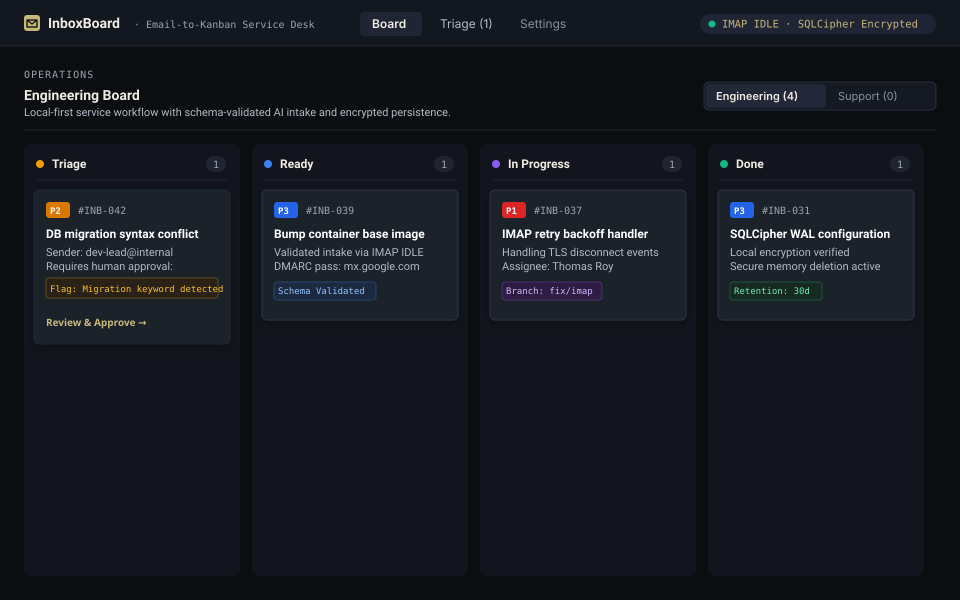

Backend systems
Java/Spring Boot APIs, transactional checkout, pessimistic row locking, and integration tests.
I build robust backend systems, data reconciliation workflows, and local-first operational software designed for reliability, data integrity, and rigorous testing.
Open resume →Java/Spring Boot APIs, transactional checkout, pessimistic row locking, and integration tests.
Python and pandas pipelines for messy exports, indexed candidate matching, and review queues.
FastAPI services, SQLCipher encryption, and operational software without cloud dependencies.

Full-stack Java/Spring Boot e-commerce application demonstrating transactional checkout integrity, role-based security, and automated testing pipelines.
Java 17 · Spring Boot · JPA · MySQL · Flyway · Docker · GitHub Actions

Workflow diagramLocal-first service desk application that turns inbound email into structured Kanban cards with automated intake routing and encrypted local persistence.
Python · FastAPI · Pydantic · SQLCipher · IMAP

Multi-stage data pipeline for normalizing messy CSV exports, matching duplicate candidate records across fields, and generating review queues with conflict explanations.
Python · pandas · YAML · CLI & Web UI · pytest
Additional Work
 Case Study
Case Study
Search platform for British Columbia FOI releases, OIPC orders, and judicial reviews. Built with a decoupled Python (Flask) search API, chunked Typesense indexing, and signed PDF document streaming.
Python (Flask) · Next.js · TypeScript · PostgreSQL · Typesense · Docker
 Desktop Tool
Desktop Tool
Desktop application built for local campaign operations to normalize CRM exports, evaluate historical contribution limits, and generate targeted donor follow-up lists.
Python · Streamlit · Electron · pandas
Languages
Backend & Data
Tools & Testing
Architecture & Storage
I like building software that makes real work easier: cleaning data, connecting systems, making things searchable, and turning repeated tasks into tools.
Get in touch